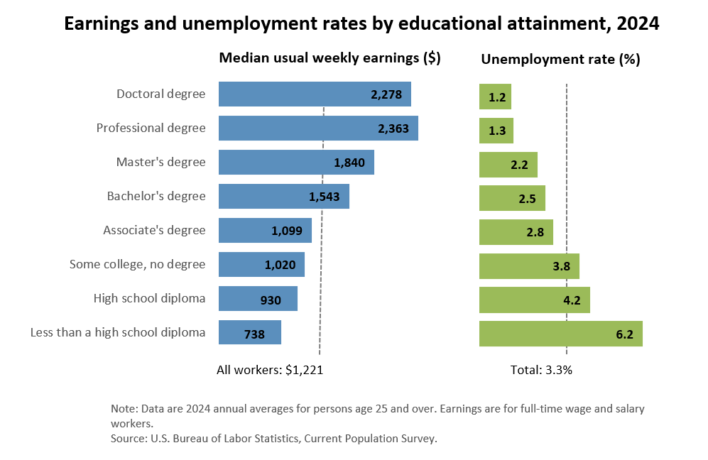

"Education is our passport to the future, for tomorrow belongs to the people who prepare for it today."
"My alma mater was books, a good library... I could spend the rest of my life reading, just satisfying my curiosity."
"Education is our passport to the future, for tomorrow belongs to the people who prepare for it today."
"My alma mater was books, a good library... I could spend the rest of my life reading, just satisfying my curiosity."

Source: Education Pays 2024, U.S. Bureau of Labor Statistics, 2024